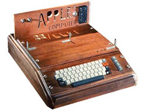
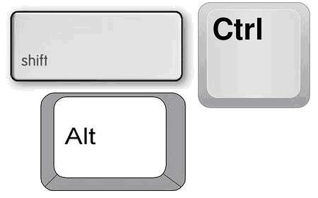

Интерфейсы
Интерфейс (с англ) – стыковочное устройство
Интерфейсы:
- Аппаратный интерфейс
- Программный интерфейс
- Человеко-машинный интерфейс
Типы пользовательских интерфейсов:
- Командный
- Графический
- Речевой
- Жестовый
- Нейрокомпьютерный
- Облачный
Первым появился текстовый интерфейс
Первая клавиатура появилась вместе с первым компьютером APPLE(1976)

Кнопки Ctrl, Shift, Enter, Alt появились в 1987 году

Создание более удобного графического интерфейса(текстовый оконный интерфейс)
Элементы, использующиеся в человеко-машинном интерфейсе:
- Window
- Icon
- Menu
- Pointing device
Применение голосового интерфейса:
- Простой перевод речи в текст
- Синтез речи
- Управление программами
Необходимые знания и умения для создания голосвого интерфейса:
- Знания физики
- Распознование образов
- Лингвистика
- Психология